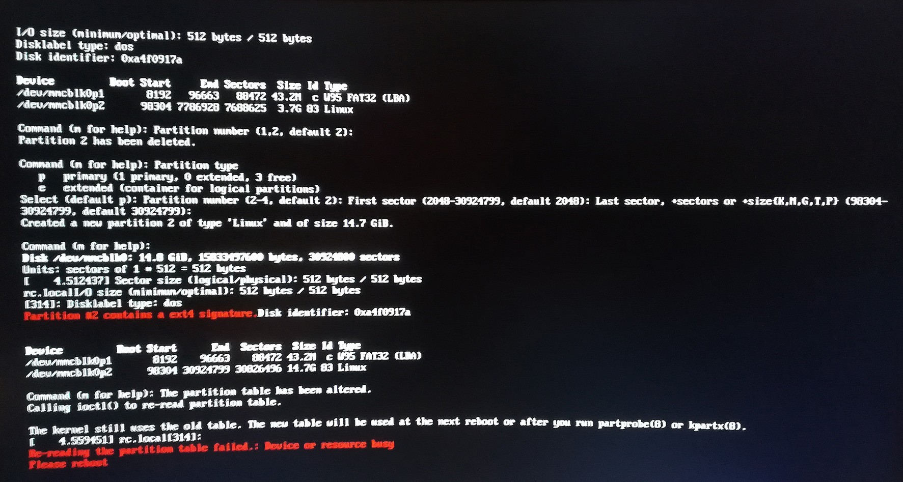
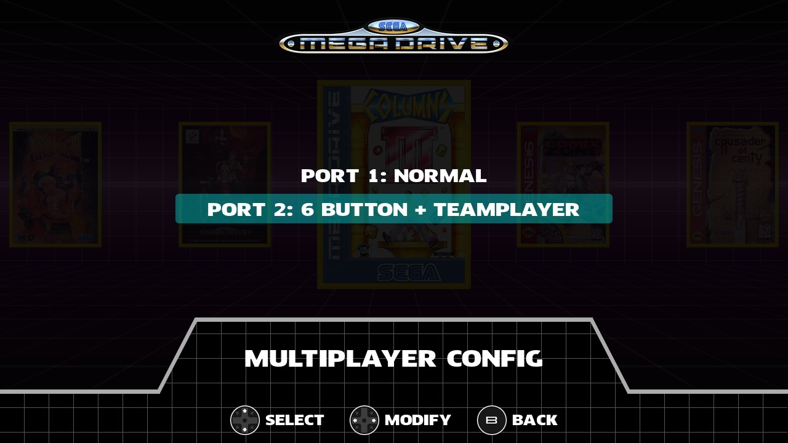

ИНСТРУКЦИЯ
НАВИГАЦИЯ:
РЕКОМЕНДУЕМОЕ ОБОРУДОВАНИЕ
УСТАНОВКА
ОБНОВЛЕНИЕ
ГАЙД ПО МЕНЮ
НАСТРОЙКА ВВОДА
КОПИРОВАНИЕ ИГР, ОБЛОЖЕК И BIOS ФАЙЛОВ
УДАЛЕНИЕ ИГР
КАСТОМНАЯ ЗАСТАВКА
ГАЙД ПО ФАЙЛОВОЙ СИСТЕМЕ
SSH/FTP ДОСТУП
ВОПРОС/ОТВЕТ
ЧТО ТАКОЕ BLAST16
Blast16 - это интерфейс, изначально созданный для Sega Genesis / Mega Drive mini. В настоящее время он поддерживает только Raspberry Pi.
Особенности:
- Поддерживает Mega Drive / Genesis (.bin, .smd, .gen и .md), Sega CD / Mega CD (.chd, .img, .iso, .bin + .cue, .bin + .cue) , Mega Drive 32X / Sega 32X (.bin, .32x), игры Master System (.sms) и Game Gear (.gg).
- Также поддерживаются форматы Zip и 7z.
- Работает на Retroarch, а также на ядрах Genesis Plus GX и PicoDrive (только для 32x игр).
- Выбор разных логотипов консоли.
- Загрузка / удаление сохранений (ограничено четырьмя слотами).
- Обложки в меню выбора игры. Если обложка для игры не найдена, вместо нее будет отображаться стоковый логотип.
- Фоновая музыка от Loop & Pixel.
- Меню избранного.
- Эффект SCANLINES.
- ТВ фильтры.
- Поддержка Bluetooth геймпадов.
- Удаление игр из внешнего интерфейса (не нужно выходить в командную строку).
- Совместимость с корпусом MegaPi от Retroflag (сценарии сброса и выключения уже включены).
- Выход в терминал, завершение работы и настройки Retroarch, доступные в меню настроек.
- Локализация*.
- Настраиваемая заставка.
* Если вы хотите, чтобы ваш язык был добавлен, или если вы обнаружили ошибку перевода, отправьте электронное письмо по адресу contact@tripware.es (на английском языке)
РЕКОМЕНДУЕМОЕ ОБОРУДОВАНИЕ
В настоящее время рекомендуется использовать Raspberry Pi 3 B +, геймпад Bluetooth M30 от 8bitdo и чехол Retroflag MEGAPi. Старые версии Raspberry Pi могут иметь проблемы с Bluetooth и не поддерживаются официально.
УСТАНОВКА
В настоящее время Blast16 распространяется в виде образа диска для Raspberry Pi, содержащего Raspbian Stretch Lite, интерфейс Blast16, Retroarch с ядрами Genesis Plus GX и PicoDrive и ImageMagick (для изменения размера обложек в один размер, а также для преобразования png в jpg).
Загрузите последний образ SD-карты с сайта и запишите его на свою SD-карту с помощью Win32 Disk Imager.
При первой установке SD-карты на Raspberry, которая работала с другой SD-картой, может появиться сообщение об ошибке:
Не паникуйте. Все в порядке. Просто отсоедините USB-кабель и подключите его снова. Raspberry Pi должен загрузиться нормально с этого момента.
ОБНОВЛЕНИЕ
Новые версии Blast16 могут быть выпущены в виде образа диска (в большинстве случаев) или USB обновления (бывает реже).
Чтобы установить новую версию, вам необходимо снова воспользоваться Win32 Disk Imager, как и в первом случае. Однако повторная прошивка карты microSD означает, что вы потеряете все игры, обложки, сохранения и настройки. Для предотвращения этого была разработана система резервного копирования и восстановления.
Подключите Флешку к вашему Raspberry Pi.Нажмите СТАРТ, чтобы открыть меню настроек, затем перейдите в Инструменты-Резервное копирование, и нажмите А.
Подождите некоторое время, пока копия не будет готова, и отсоедините USB.
Сделав резервную копию, вы можете безопасно залить на SD карту последнюю версию. После того, как новый образ был записан на карту, вы можете восстановить данные.
Выполните следующие шаги: Включите Raspberry Pi. Подключите флешку, на которой была сделана ваша резервная копия. Нажмите СТАРТ, выберите Восстановление и нажмите А.
Через некоторое время Raspberry Pi перезагрузится, и все ваши игры, обложки, сохранения и настройки вернутся.
Обновления образа SD-карты могут привести к тому, что устройства Bluetooth будут забыты, поэтому вам придется выполнить их сопряжение заново.
Если сценарий резервного копирования у вас не срабатывает, то убедитесь, что на флешке нет скрытых разделов. Попробуйте отформатировать ее при помощи SD Formatter. Если это не помогло, попробуйте использовать другую флешку.
USB ОБНОВЛЕНИЕ
Эти обновления проще в установке:
1. Загрузите файл «Обновление USB» с сайта, если оно доступно, и скопируйте его на свой USB-накопитель.
2. Подключите Флешку к Raspberry Pi и включите ее. Обновление будет установлено до появления логотипа Blast16.
3. Отсоедените USB-накопитель, когда увидите логотип Blast16. Если вы оставите его подключенным, обновление будет устанавливаться при каждой загрузке Pi.
ГАЙД ПО МЕНЮ
Blast16 разработан, чтобы быть очень простым. Есть три разных экрана: «Все игры», «Любимые игры» и «Меню настроек».
СПИСОК ИГР
Здесь вы можете увидеть все ваши игры. Нажмите A, чтобы начать игру с начала, B, чтобы загрузить сохранение, или C, чтобы добавить/удалить игру в избранное. Чтобы получить доступ к списку избранных игр, нажмите вверх на D-pad. Если у вас более 10 игр, нажмите L / R для быстрой навигации.Если вы добавили игры из более чем одной системы, нажмите «Вниз» на D-pad, чтобы перейти к первой игре следующей системы.
ИЗБРАННЫЕ ИГРЫ
Здесь вы можете увидеть избранные игры. Как и в списке «Все игры», нажмите A, чтобы начать игру с начала, и B, чтобы загрузить сохранение. Чтобы удалить игру из списка, нажмите C. Чтобы вернуться к списку игр, нажмите вверх на D-Pad. Если у вас более 10 игр, нажмите L / R для быстрой навигации. Если вы добавили игры из более чем одной системы, нажмите «Вниз» на D-pad, чтобы перейти к первой игре следующей системы.
МЕНЮ НАСТРОЕК
Здесь вы можете получить доступ к настройкам Blast16, нескольким полезным инструментам, узнать об авторах, а также перезагрузить или завершить работу системы (что удобно, если вы не используете корпус с возможностями сброса и выключения, как, например, MEGAPi Case).
НАСТРОЙКИ
Здесь вы можете получить доступ к общим настройкам, настройкам эмуляции и ввода.
ОСНОВНЫЕ
Здесь вы можете изменить язык, логотип и аудиовыход, а также выключить музыку из меню.
ЭМУЛЯЦИЯ
Автозагрузка: если установлено значение «Да», когда вы нажимаете «А» для игры в списке «Все игры» или «Список избранных игр», вы продолжаете прямо там, где вы ее из нее вышли.
Это не сработает, если вы выключите Raspberry Pi во время игры. Вы должны выйти из эмулятора для автосохранения файла, который будет создан.
Режим отображения: PIXEL PERFECT или 4:3.
Фильтрация: применяет небольшой эффект размытия.
Сканлайны: имитирует эффект ЭЛТ телевизора.
Оверлеи: выбор экранных рамок.
НАСТРОЙКА ВВОДА
Здесь вы можете переназначить кнопки управления, настроить многопользовательскую конфигурацию, выполнить поиск устройств Bluetooth или сбросить кэш Bluetooth.
Этот последний параметр «сбросить кэш Bluetooth» следует использовать только в том случае, если у вас подключены контроллеры, но внезапно Blast16 не может их обнаружить. Он удаляет известные устройства Bluetooth из памяти Bluetooth Raspberry Pi, так что вы можете начать сопряжение со всеми вашими контролерами снова.
МНОГОПОЛЬЗОВАТЕЛЬСКАЯ КОНФИГУРАЦИЯ
У Mega Drive/Genesis были разные мультиплеерные периферийные устройства. Два из них - Teamplayer и 4-WayPlay. Оба могут быть подключены к игроку 1 или игроку 2, и каждая игра, которая поддерживала эти периферийные устройства, имела свой способ их использования (некоторые имели периферийное устройство на порту 1, некоторые на порту 2).
Также вы можете установить количество кнопок управления (3 или 6) для каждого режима.
ИНСТРУМЕНТЫ
Здесь вы можете удалить игры, сделать резервную копию и восстановить систему, изменить размер всех обложек (полезно, если размер обложек не изменяется автоматически при загрузке), открыть Retroarch, чтобы изменить любой параметр, недоступный во внешнем интерфейсе, и выйти в терминал.
НАСТРОЙКА ВВОДА
Когда Blast16 запускается, он будет искать проводные и Bluetooth-контроллеры. Чтобы подключить свой контроллер Bluetooth, убедитесь, что он находится в режиме сопряжения, прежде чем запускать Blast16.
Если обнаружен новый геймпад, он будет искать предустановку управления. Если пресет не найден, вам будет предложено нажать кнопки A, B, C, X, Y, Z, Start, Select, L, R и горячую клавишу (*). Если на вашем контроллере нет какой либо из этих кнопок, просто подождите 5 секунд.
*Что касается «горячей клавиши», это кнопка, которая включает горячие клавиши эмулятора, например, сохранение состояния (горячая клавиша + A), загрузка состояния (горячая клавиша + B) и т. д. Для горячей клавиши рекомендуется использовать кнопку Select. Если вы не нажмете кнопку, будет использоваться кнопка Select.
После настройки конфигурация будет сохранена, и вам не придется делать это при каждом запуске. Вы также можете переопределить эти кнопки в любое время, перейдя в Параметры ввода.
КЛАВИАТУРА
Вы можете управлять Blast16 с помощью клавиатуры.
Dpad = стрелки.
A = A.
B = S.
C = D
Старт = W.
L = Q.
R = E.
ГОРЯЧИЕ КЛАВИШИ
Горячая клавиша + START или HOME (если доступна кнопка HOME): зайти в меню Retroarch.
Горячая клавиша + Влево / Вправо: переключение слота для сохранений.
Горячая клавиша + Вверх / Вниз: громкость +/-.
Горячая клавиша + A: сохранить игру.
Горячая клавиша + B: загрузить игру.
Горячая клавиша + C: выход в основное меню.
Горячая клавиша + X: сброс игры.
Горячая клавиша + Y: быстрая перемотка вперед.
КОПИРОВАНИЕ ИГР, ОБЛОЖЕК И BIOS ФАЙЛОВ
Хоть Blast16 и может добавить около 1000 игр с обложками в 1 ГБ ОЗУ Rasbperry Pi, настоятельно рекомендуется этого не делать. С 100-200 играми производительность хорошая, а просмотр удобен. Более того, ситуация ухудшится (время загрузки будет очень большим, экран может мигать из-за перегрузки графического процессора и т. Д.).
Другие дистрибутивы позволяют добавлять до 8000 ПЗУ, но Blast16 не предназначен для того, чтобы иметь все Mega Drive, Master System, Game Gear, Mega CD и 32X игры. Его цель - превратить ваш Raspberry Pi в Mega Drive mini, где вы можете добавлять свои любимые игры, но не полные ромсеты.
ДОБАВЛЕНИЕ ИГР
После первого запуска системы подключите к Raspberry Pi флешку, и выполните резервное копирование. Далее подключите флешку к вашему пк. В каталоге blast16_backup найдите папку games. Внутри должно быть пять папок, каждая отвечает за определенную консоль:
32x - SEGA 32X
cd - SEGA CD
gg - SEGA GAMEGEAR
md - SEGA MEGADRIVE/GENESIS
ms - SEGA MASTERSYSTEM
В каждый каталог можно добавлять ромы, соответсвующие выбранной системе. В подкаталоге boxarts можно добавлять обложки к играм. Если игра имеет имя файла "Aladdin.bin, то обложка должна иметь имя Aladdin.jpg (можно использовать и png обложки, встроенный скрипт изменит расширение на jpg)."
Если ваши игры Mega CD/Sega CD состоят из нескольких .bin-файлов и одного .cue-файла, вы должны скопировать их в свой собственный каталог внутри «games / cd».
После того, как вы наполните вашу флешку играми и обложками, подключите ее снова к Raspbery Pi, и включите питание. Подождите некоторое время, пока игры не будут скопированы.
ПРИМЕЧАНИЕ: чтобы файлы BIOS работали, их нужно назвать так:
«bios_CD_E.bin»
«bios_CD_J.bin»
«Bios_CD_U.bin»
УДАЛЕНИЕ ИГР
В Настройки -> Инструменты выберите Удаление игр.
Это меню похоже на Список всех игр. Нажмите C на каждой игре, чтобы отметить ее для удаления. Когда вы закончите, нажмите A, чтобы удалить выбранные игры. Вам будет предложено подтвердить решение.
КАСТОМНАЯ ЗАСТАВКА
Если вы хотите использовать свою собственную заставку, убедитесь, что ее разрешение 1280x720, переименуйте ее в «splash.png», скопируйте в корневой каталог флешки, затем подключите ее к Raspberry Pi и включите систему.
Если вы хотите вернуться к исходному изображению-заставке, вы можете взять его отсюда.
ГАЙД ПО ФАЙЛОВОЙ СИСТЕМЕ
-Директория с Blast16: /home/pi/blast16
-Игры: /home/pi/blast16/games
-Обложки: /home/pi/blast16/games/boxarts
-Bios файлы: /home/pi/blast16/bios
-Скрипты (скрипты Python и shell для резервного копирования/восстановления, подключения Bluetooth устройств и т. д.):/home/pi/blast16/scripts
-Данные (настройки):/home/pi/blast16/data/blast16
-Настройки ввода: /home/pi/blast16/data/blast16/input.
-Настройки Retroarch: /home/pi/.config/retroarch
SSH/FTP ДОСТУП
Чтобы получить доступ к Raspberry Pi через SSH или FTP, вам сначала нужно выяснить IP адрес. Для этого перейдите в Настройки -> Инструменты. Если вы подключены через Ethernet, вы увидите свой IP внизу. Если хотите использовать WiFi подключение, то зайдите в Настройки-Инструменты-Терминал.
Введите при помощи клавиатуры: sudo raspi-config
Далее выберите Network Options-WiFi.
Затем поочередно введите SSID вашей сети и пароль. (Если ваш SSID содержит пробелы, подключение не удастся - необходимо изменить SSID в настройках роутера)
Затем выберите Finish, и введите sudo reboot - система перезагрузится.
При успешном подключении ваш IP будет отображаться в Настройках-Инструменты.
Теперь вы готовы подключиться через SSH/FTP. Используйте ваше любимое приложение SSH (например, Putty) или FTP (например, Filezila или WinSCP) для входа.
Пользователь - pi, пароль - blast16. Порт 22
Хост - ваш IP адрес.
ВОПРОС/ОТВЕТ
В. Я добавил много игр и экран мигает. Что происходит?
О. Вы добавили слишком много игр. Размуеется, вы можете добавить 1000 игр и даже больше, но настоятельно рекомендуется добавлять только те игры, в которые вы действительно хотите играть, и использовать список избранного, чтобы получить меньший список этих игр. Меньшее количество игр приводит к более плавной работе и скроллингу игр.
Blast16 не предназначен для всех игр Mega Drive / 32X / Sega CD / Master System / Game Gear, он создан для того, чтобы люди могли создать свой свобственный Mega Drive mini из Raspberry Pi, и, как и любая мини-консоль, он должен содержать ограниченное количество игр.
В. Будете ли вы создавать отдельные игровые меню для консоли?
О. Нет. Blast16 - это концептуальный способ превратить Raspberry Pi в Mega Drive Mini. Другие системы просто бонус. Начиная с версии 1.0.9, игры сортируются по системе, а затем по алфавиту, и нажав «Вниз», вы можете перейти к первой игре следующей системы.
В. Можно ли изменить фоновую музыку?
O. Нет.
B. Как мне обновиться?
О. Вы должны залить образ на SD карту как в первый раз. Однако, этот способ удалит все ваши игры, обложки, настройки и сохранения ... Поэтому вам лучше сделать «резервное копирование и восстановление». Следуй этим шагам:
1- Подключите USB-накопитель к Raspberry.
2- В Blast16 зайдите в Настройки-Инструменты-Резрвное копирование и нажмите A, затем подтвердите. Дождитесь окончания резервного копирования.
3- Подключите USB-накопитель к компьютеру, чтобы убедиться, что была сделана резервная копия (должен быть каталог с именем «blast16_backup»).
4- Выключите Raspberry Pi.
5- Извлеките microSD и залейте IMG с новой версией.
6- Вставьте microSD и включите Малину.
7- Подключите USB-накопитель.
8- Перейдите в Настройки-Инструменты-Восстановление и нажмите А, затем подтвердите. Подождите, пока восстановление будет завершено.
Все ваши игры, обложки и т. д. должны быть скопированы.
В. Могу ли я изменить другие параметры Retroarch, которые не видны во внешнем интерфейсе?
О. Да, зайдя в Настройки-Инструменты-Открыть Retroarch. Но имейте в виду, что любые изменения в Retroarch, которые невозможно выполнить с внешнего интерфейса, не поддерживаются.
В. Мой геймпад обнаружен, но некоторые кнопки не работают.
О. Blast16 совместим только с контроллерами прямого ввода (D-Input), поэтому вам нужно проверить, имеет ли ваш контроллер этот режим соединения. Например, контроллеры Retroflag Mega Drive переходят в режим D-Input нажатием «Y» перед подключением к USB-порту (вам нужно сделать это только один раз), а 8bitdo обычно включают режим D-Input нажатием B + Start.
В. Могу ли я включить WiFi?
О. Да, перейдите в Настройки-Инструменты-Терминал. Подключите клавиатуру к Pi, введите «sudo raspi-config» и нажмите Enter. Затем перейдите в Network, затем WiFi, далее введите имя и пароль вашей сети.
B. Будете ли вы поддерживать Retroarchievements?
O. Может быть.
В. Мой контроллер Bluetooth не подключается после обновления.
О. При обновлении все контроллеры Bluetooth забываются. Вы должны соединить их, как в первый раз. Однако, если вы уже выполнили их сопряжение и снова включили их в режим сопряжения, Pi может их не распознать (не знаю почему). В этих случаях, пожалуйста, выполните следующие действия:
Подключите ваш контроллер по USB к Raspberry.
Зайдите в настройки-ввод.
Перейдите в «Сброс кеша Bluetooth» и нажмите A.
Выключите малину.
Отключите ваш контроллер.
Включите Raspberry Pi.
Когда вы видите логотип Blast16, вы можете включить контроллер (не забудьте сделать это в режиме D-input) и удерживать кнопку сопряжения, пока он не перейдет в режим сопряжения.
В. Могу ли я использовать клавиатуру?
A. Blast16 может управляться с клавиатуры, но для игр вам понадобится геймпад.
В. Как называется фоновая музыка и кто ее написал?
О. Она называется «The management song» и создана Loop & Pixel.
В. Я скопировал игры и обложки по FTP, но они все еще большие.
О. Начиная с версии 1.0.12, скрипт автоматического изменения размера работает только при копировании игр через USB. Вы должны перейти в Настройки-Ресайз обложек и нажать A.